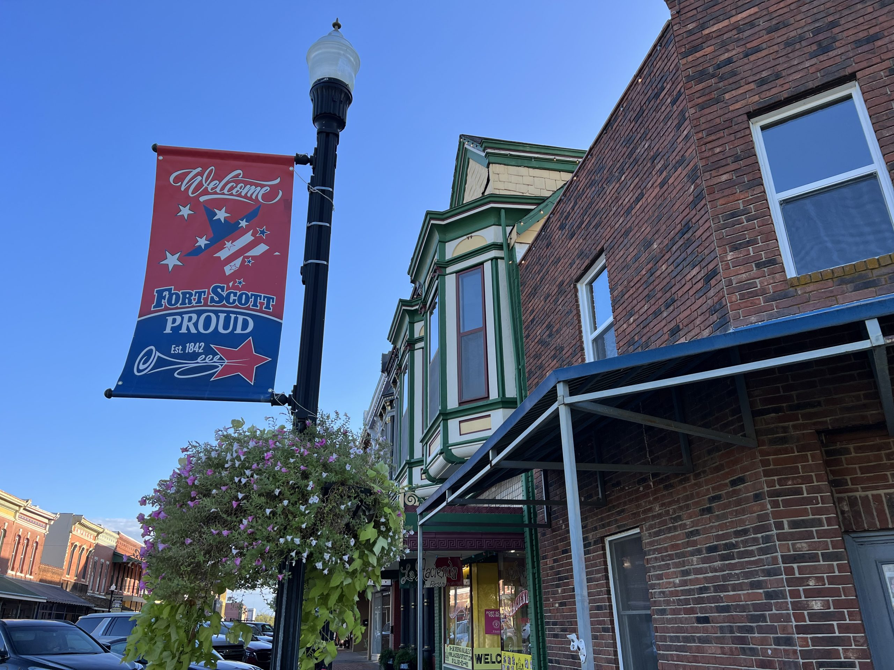

Moving to Hutchinson? Here's What You Need to Know
Your guide to settling into life in Reno County, Kansas.

Whether you're relocating for work, retiring to a quieter pace, or coming back to your roots in south central Kansas, Hutchinson has a lot to offer. With a population of around 40,000 and the charm of a welcoming mid-sized Kansas city, Reno County is the kind of place where people know their neighbors and local businesses still matter. If you've been asking "Where is Hutchinson?" or wondering what life is really like here, this guide covers everything you need to know before and after your move.
Getting to Know Hutchinson
Hutchinson sits in the heart of south central Kansas, about 45 miles northwest of Wichita along Highway 50 and K-61. If you're driving over from the Wichita metro area, it's a quick trip west — you'll pass through some beautiful open Kansas countryside before you arrive. The city was founded in 1871 and grew rapidly thanks to its salt mining industry, a heritage that's still celebrated today at the Kansas Underground Salt Museum (Strataca), one of the area's biggest draws and a must-visit for anyone new to town.
Beyond history, Hutchinson offers a surprisingly vibrant downtown with locally owned shops, restaurants, and a thriving farmers' market during the warmer months. Stroll down Main Street and you'll find everything from antique stores to coffee shops that have been serving the community for decades. The community hosts events throughout the year, from the Kansas State Fair — one of the largest state fairs in the country — to holiday parades that bring the whole county out. There's a real sense of pride here — people take care of their town, and newcomers pick up on that energy fast.
Hutchinson also has a rich cultural legacy. The Kansas Cosmosphere and Space Center, located right in the heart of town, is one of the most significant space museums in the world and houses the largest collection of U.S. space artifacts outside of the Smithsonian. It's a point of genuine pride for the community and a fascinating destination for visitors and residents alike. The historic Fox Theatre downtown is another gem, hosting live performances, films, and community events in a beautifully restored setting.
Cost of Living
One of the biggest advantages of moving to Reno County is affordability. Housing costs are well below the national average, whether you're renting or buying. You'll find everything from charming historic homes near downtown Hutchinson to newer developments on the edges of town along E 17th Ave and the surrounding area. Property taxes in Kansas can vary, but Reno County's rates are generally reasonable compared to the Wichita metro area.
Groceries, utilities, and everyday expenses are also lower than most urban areas, which means your dollar stretches further here. For families moving from a bigger city, the difference can be significant — many new residents tell us they're surprised at how much more breathing room they have in their monthly budget after the move. That kind of affordability is a big part of why people choose Reno County over pricier suburbs closer to Wichita.
Schools and Families
Is Hutchinson a good place to raise a family? We'd say absolutely. Hutchinson USD 308 serves the area with several elementary schools, a middle school, and Hutchinson High School, home of the Salthawks. Hutchinson Community College is right in town, offering two-year degrees, vocational programs, and continuing education for adults looking to build new skills.
Families will find a safe, tight-knit community with plenty of youth sports leagues, parks, and outdoor activities through the Hutchinson Recreation Commission. The Hutchinson Recreation Commission facilities are a favorite for families — with indoor pools, fitness centers, and community events and youth programs year-round. Kids can play on organized baseball, basketball, and soccer teams, and summer brings swimming lessons and day camps that keep them busy. Carey Park, with its sprawling green spaces, playground areas, and the Hutchinson Zoo, is practically a second backyard for families who love the outdoors. Dillon Nature Center offers nature trails, a fishing pond, and educational programs the whole family will enjoy.
Jobs and the Local Economy
What's the job market like in Hutchinson? It's a fair question, and the answer depends on your field. Major employers in the area include Hutchinson Regional Medical Center, the school district, Hutchinson Community College, and several manufacturing and agricultural operations. Hutchinson also serves as a regional hub for surrounding rural communities across Reno County and neighboring counties, which means local retail, healthcare, and service businesses stay busy.
If you're working remotely, you'll appreciate the lower cost of living while staying connected — broadband access has been expanding across Reno County in recent years, and many residents now work for companies in Wichita, Kansas City, or beyond without ever leaving town. Small business owners will find a supportive community through the Hutchinson/Reno County Chamber of Commerce, which actively works to attract and support local entrepreneurs.
Agriculture remains a cornerstone of the local economy, with wheat farming, cattle ranching, and grain production all playing significant roles. Salt mining has been a major industry here for over a century, and Hutchinson remains an important hub for underground storage and mining operations. If you're in the ag industry or looking to get into it, Reno County has good land, cooperative neighbors, and a strong tradition of farming that goes back generations.
Weather: What to Expect
South central Kansas gets all four seasons, and they're each distinct. Summers are hot and can be humid, often pushing into the upper 90s with heat that builds across the open prairie. Winters are cold with occasional ice storms and a few good snowfalls each year, though generally milder than northern Kansas. Spring brings tornado season — this is tornado alley, after all — so having a weather plan and a NOAA weather radio is just part of life here.
The upside? Fall in Reno County is genuinely beautiful. The trees in Carey Park light up with color, the air turns crisp, and the relatively mild climate means a long growing season for gardeners and farmers alike. And if you're into hunting, fall is prime season for deer and pheasant throughout the county.
If you're storing belongings during your move, Kansas weather is worth thinking about. Our blog post on protecting your belongings from Kansas humidity has detailed tips on keeping your items safe in a self storage unit through every season.
Things to Do in Reno County
Hutchinson may be a mid-sized Kansas city, but there's no shortage of things to do. Here are some highlights to look forward to once you're settled in:
- Kansas Cosmosphere and Space Center — World-class space museum with the largest collection of U.S. space artifacts outside of the Smithsonian, plus a planetarium and IMAX theater
- Dillon Nature Center — Over 100 acres of nature trails, gardens, a fishing pond, and educational programs perfect for families
- Hutchinson Recreation Commission — Indoor pools, fitness centers, walking tracks, and community programs for all ages
- Hutchinson Zoo — A family-friendly zoo located in Carey Park with a variety of animals and interactive exhibits
- Downtown Hutchinson — Locally owned shops, restaurants, the historic Fox Theatre, seasonal festivals, and a vibrant farmers' market
- Local hunting and fishing — Reno County has excellent pheasant, deer, and fishing opportunities at Cheney Reservoir and on public and private land
- Kansas State Fair — One of the largest state fairs in the country, held every September in Hutchinson with livestock shows, concerts, carnival rides, food vendors, and community gatherings the whole family will enjoy
- Golf and recreation — The Carey Park Golf Course offers a solid round of golf, and there are several sports leagues for adults who want to stay active
One thing newcomers consistently say they love about Hutchinson is how involved the community is. There's always a fundraiser, a parade, a potluck, or a game to attend. You won't be bored, and you won't feel like a stranger for long.
How Self Storage Helps Your Move
Moving to a new town almost never goes perfectly. Closing dates slip, apartments aren't ready, and you end up with more stuff than your new place can hold on day one. How can storage help during a move? In about a dozen ways, honestly. At Reno County Storage, we see new residents use mini storage to:
- Bridge the gap between moving out and moving in when timelines don't line up
- Downsize gradually if you're coming from a bigger home and need time to sort through belongings
- Store seasonal items like lawn equipment, holiday decorations, or hunting gear while you settle in
- Keep overflow items safe while you find the right permanent home in the area
- Hold furniture from your old place while you decide what fits in your new layout
Our facility at 2511 E 17th Ave is conveniently located right off Highway 50, so it's easy to find even if you're still learning your way around town. Every unit comes with drive-up access, which means you can back your truck or trailer right up to the door — no elevators, no hallways, no hassle. We also provide a free lock with every new rental, 24/7 security cameras, and month-to-month leases so you're never locked into a long-term contract. You can reserve a unit online before you even arrive in Hutchinson.
Not sure what size self storage unit you need? Our size guide breaks it down by room count and item type, making it simple to pick the right fit. And if you still have questions, just call us at (620) 662-7336 — we're happy to walk you through it.
Tips for a Smooth Move to Hutchinson
Here are some practical things to take care of before and during your move to Reno County:
- Visit before you move if possible. Spend a weekend exploring neighborhoods, driving around downtown Hutchinson, and getting a feel for the town. Grab lunch, walk through Carey Park, and check out the Kansas Cosmosphere.
- Connect with locals early. Join the Hutchinson/Reno County Chamber of Commerce events, follow community groups on social media, and introduce yourself to neighbors. People here are genuinely welcoming.
- Set up utilities ahead of time. Contact Kansas Gas Service, Evergy for electric, and the City of Hutchinson for water. Getting these lined up before move-in day saves a lot of headaches.
- Update your address with USPS, your bank, insurance, and the Kansas DMV. You'll need a Kansas driver's license within 90 days of establishing residency.
- Find a local doctor and dentist. Hutchinson Regional Medical Center and several local clinics serve the Hutchinson area. Getting established with a primary care provider early means you're covered if something comes up.
- Reserve a self storage unit before you arrive so you have a place to unload overflow items immediately. This takes a huge amount of stress out of moving day.
- Check out the FAQ page on our website if you have questions about how mini storage works, what you can store, or how billing is handled.
Welcome to Reno County
Hutchinson is the kind of town where people wave when they drive by, where Friday night football games at Hutchinson High School are a community event, and where your neighbors will bring over a plate of food when you move in. Whether you're coming for the affordable cost of living, the small-town quality of life, or to be closer to family, we're glad you're considering making Reno County your home.
If you need storage during your transition, give us a call at (620) 662-7336 or reserve your unit online. Reno County Storage is locally owned by Midwest Storage Solutions LLC, a veteran-owned business. We offer month-to-month leases, a free lock with every unit, 24/7 security, drive-up access, and a 10% military discount for active duty and veterans. Our facility is right at 2511 E 17th Ave — stop by any time and we'll help you get settled.
More from the Blog

Why Self Storage Makes Moving Easier
A storage unit can take the stress out of your move. Here's how.

How to Choose the Right Storage Unit Size
From small closets to large garage-sized units, here's how to pick the perfect fit.

Storage Solutions for Reno County Homeowners
From seasonal gear to renovation overflow, here's how local homeowners use storage.